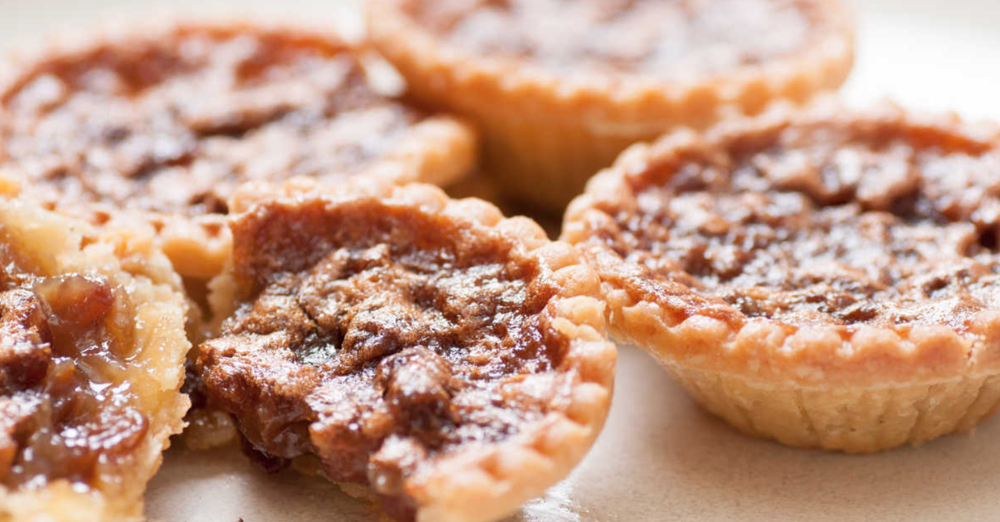

Butter Tarts
Try these quintessential Canadian tarts!
Butter tarts are small pastries consisting of butter, sugar, syrup, and egg filling. The filling goes on top of flaky pastry, and once baked, the tart's filling will be crunchy on top and mostly solid.
VIDEO
Preperation Time: 45mins
Total Time: 1 hour 15mins
Chilling Time for Pastry: 30minsServings: 12 tarts

Ingredients
PIE PASTRY
BUTTER TART FILLING
PLAIN FILLING (without add ins)
RAISIN FILLING (add in)
CHOCOLATE CHIP FILLING (add in)
PECAN FILLING (add in)
Instructions
If using raisins then place them in a medium bowl and cover with boiling water, let sit 5 minutes then drain. Immediately add hot raisins to butter mixture and stir until butter has melted. Then add beaten egg and vanilla, brown sugar, salt and corn syrup stir to combine well. If not using the raisins then melt the butter, let cool slightly, then add the beaten egg, vanilla, brown sugar, salt and corn syrup stir to combine well. At this point you can either stir in the chopped pecans, chocolate chips or leave the filling plain. Pour the filling into the prepared tart shells and bake for 15 minutes at 400°F, reduce heat to 350°F and continue baking for approximately 10 - 15 minutes (until they start to brown). Let cool before serving. Enjoy!
Nutrional Facts
Per Serving
Calories 292kcal
Protein 3g
Carbohydrates 40g
Fat 14g
Cholesterol 30mg
Sodium 123mg